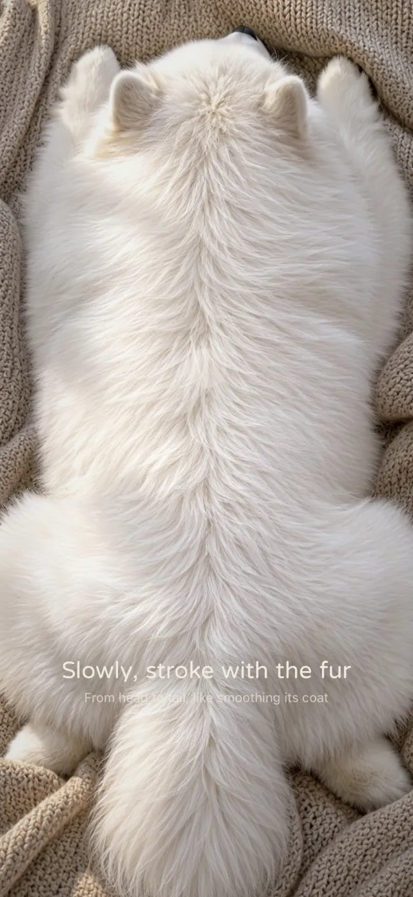
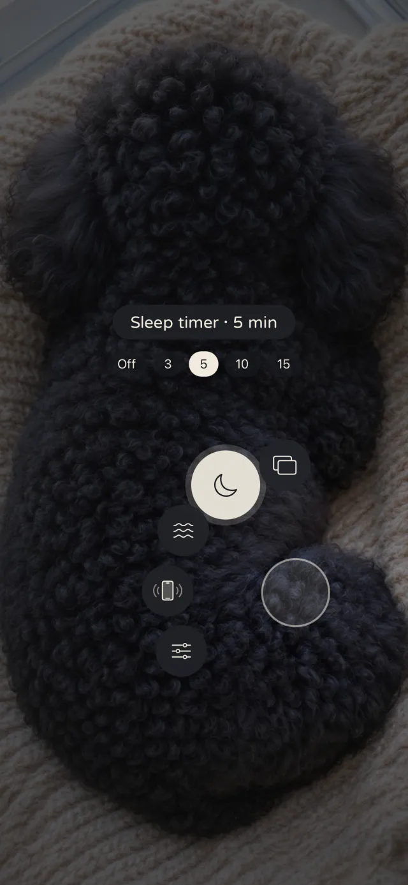
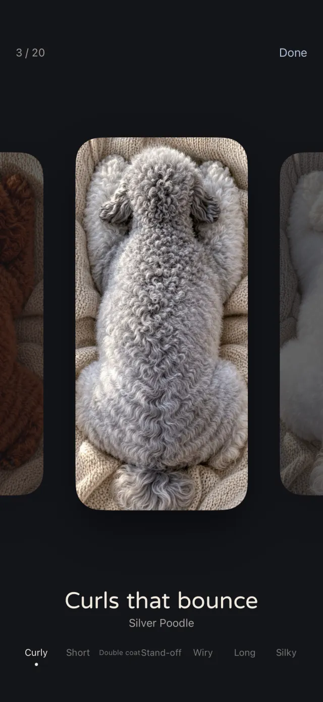

A calming iPhone app for bedtime
Pet a sleeping dog
and slow down.
Stroke slowly with the fur. It bends under your finger and springs back when you let go. As you keep going, the dog's breathing slows until it is fast asleep.
Download on the App Store- ✓ 20 dogs, 7 kinds of fur
- ✓ No scores, tasks or feeding
- ✓ No account needed

Touch
The fur really moves
Stroke with the grain and the fur lies down toward your finger, then slowly springs back. Stroke against it and the fur ruffles up for a while before it settles. Curls bounce, long hair drifts after your hand, short coats stay smooth.
Menu
Rest your finger and the menu opens by your thumb
While you pet, there is nothing on the screen. To switch dogs or set a timer, keep your finger still for 0.8 seconds and five buttons open beside your thumb. Slide to one without lifting, then let go.

Dogs
20 dogs, met one at a time
The black poodle, latte shorthair, Shiba Inu, Samoyed and golden retriever are free. The other 15 are for members: you can try one for 20 seconds, or watch an ad to pet it for the day.

Bedtime
When the dog falls asleep, you are close too
After about a minute of slow petting the dog sleeps deeply and the screen dims. With the sleep timer on, the breathing fades out and the screen turns black when time is up. Tap once to come back.
▲ No buttons on screen while you pet.
Good for
- Lying in bed before sleep
- When your mind won't settle
- Waiting for a bus or in line
- Missing your own dog
Details
| Dogs | 20 (5 free) |
|---|---|
| Fur | 7 kinds: curly, short, double coat, stand-off, wiry, long, silky |
| Sound | Only very faint breathing, can be turned off |
| Haptics | An occasional tap when the dog reacts, can be turned off |
| Account | None needed |
| Price | Free with ads; membership is a one-time purchase |
| Requires | iPhone with iOS 17 or later |
Ads appear only at the bottom of the dog picker and settings. The petting screen never shows ads.
Free
- 5 dogs
- Sleep timer, breathing sound and haptics
- Ads at the bottom of the dog picker and settings
- Watch an ad to pet one locked dog for the day
Member (one-time purchase)
- All 20 dogs
- No ads
- Dogs added later are included
- Restore with the same Apple Account on a new phone